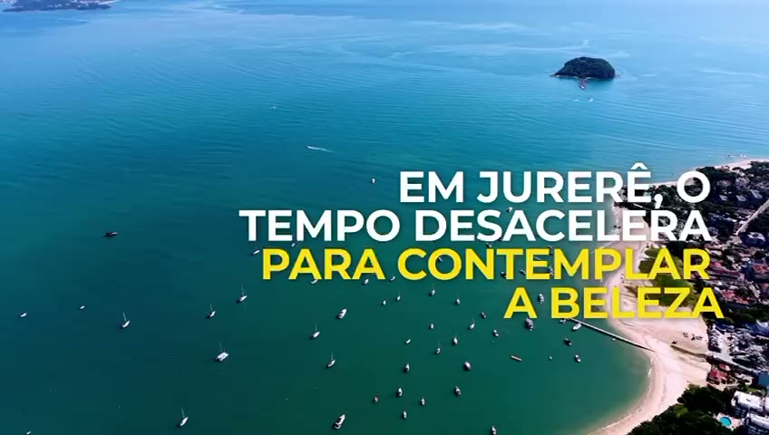

Formar quem vai cuidar depois
Oficinas, reforço e leitura para crianças e jovens. O bairro se ensina e se conta.
Ver projetosInstituto · Jurerê, Florianópolis
Educação, meio ambiente, cultura e comércio local. Um instituto feito por quem vive Jurerê — para que ele continue sendo Jurerê.

Quem somos
Somos uma organização sem fins lucrativos que reúne moradores, voluntários e parceiros em torno de projetos que melhoram a vida do bairro. Trabalhamos com transparência, escuta e mãos na areia.
Vídeo institucional
Um retrato de quem faz Jurerê acontecer — moradores, voluntários e parceiros, com as mãos na areia.

Quatro caminhos, um propósito: um bairro vivo, justo e à beira-mar.
Oficinas, reforço e leitura para crianças e jovens. O bairro se ensina e se conta.
Ver projetos
Mutirões, plantio nativo e educação ambiental para preservar o que faz Jurerê ser Jurerê.
Ver projetos
Encontros, mutirões e canais de escuta. Vizinhança que vira coletivo.
Ver projetos
Apoio a negócios locais e ao Guia que liga moradores a quem produz aqui.
Conhecer o GuiaNotícias, comunicados e bastidores do trabalho no bairro.

Em uma manhã de sábado, moradores recolheram mais de uma tonelada de resíduos e replantaram espécies nativas ao longo da orla. Veja como foi e como participar da próxima edição.
Vagas gratuitas para crianças de 7 a 12 anos, às terças e quintas.
Parceria reduz custos e abre espaço para um projeto de educação energética.
Mobilidade, arborização e segurança lideram as pautas de 2026.
Agenda aberta. Toda ajuda no bairro começa com presença.

Guia Local de Jurerê
Um diretório dos negócios e serviços de Jurerê: da padaria da esquina à pousada à beira-mar. Achar o que você precisa perto de casa fortalece a economia de quem é daqui.
Faça parte
Associados sustentam os projetos, decidem as prioridades e recebem o bairro em primeira mão. Comece hoje — leva dois minutos.
Quero me associar